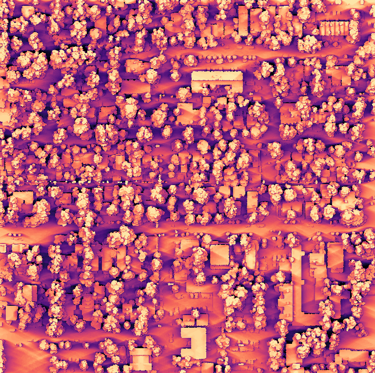
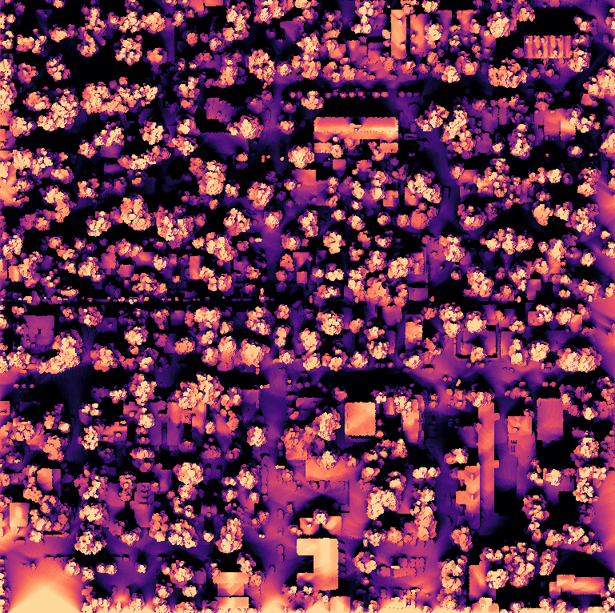

GPU solar irradiance & 3D shadow analysis (LiDAR DSM)
Annual clear-sky solar energy for every 0.5 m cell of a real LiDAR surface model. Shadows from trees and buildings were ray-traced on the GPU for 558 sun positions across the year, so roofs, yards and streets can all be ranked for PV or shade.
558sun positions (12 days × 15 min)
1 Mcells @ 0.5 m
~400ray-march steps / cell / sun
300–2246kWh/m²/yr range
Interactive viewer
Overlay: annual solar energy (dark = shaded, yellow = full sun). Click a roof for its facets.
Winter vs summer sun hours

21 June: 0 to 15 h of direct sun

21 December: 0 to 9.5 h, long tree and building shadows
Method
DSM 0.5 m from USGS 3DEP LiDAR (PDAL max-Z gridding).
Sun position for the 21st of each month, every 15 min (NOAA declination / hour-angle equations, local solar time).
For each sun position, every cell marches a ray toward the sun on the GPU (CuPy) and is shadowed if the DSM rises above the ray.
Irradiance: Meinel clear-sky DNI × cos(incidence) on the DSM surface normal, plus 10 % isotropic diffuse, summed to kWh/m²/yr.
Per-roof-plane values joined to the LiDAR roof reconstruction.
What I deliver on a client project
Rooftop PV potential per building / facet, with kWh/yr and suggested panel area
Shadow studies for new buildings (before/after), right-to-light and park shading
Solar-access maps for whole cities from national LiDAR
Results as GeoTIFF, GeoJSON, web map or PDF report
Limitations of this sample
Clear-sky model: no clouds or TMY weather, so real yields are lower (multiply by a local clearness factor, or I run it with PVGIS/TMY data).
Diffuse light is a simple 10 % term with no sky-view factor. Trees are treated as solid.
Sun positions use local solar time, with no time-zone or equation-of-time correction (does not change the totals).
Built by Nurtac Suleymanzade, GIS analyst (PhD research in spatial analysis). Compute: cloud Linux workstation with NVIDIA L4 GPUs. Open data only.